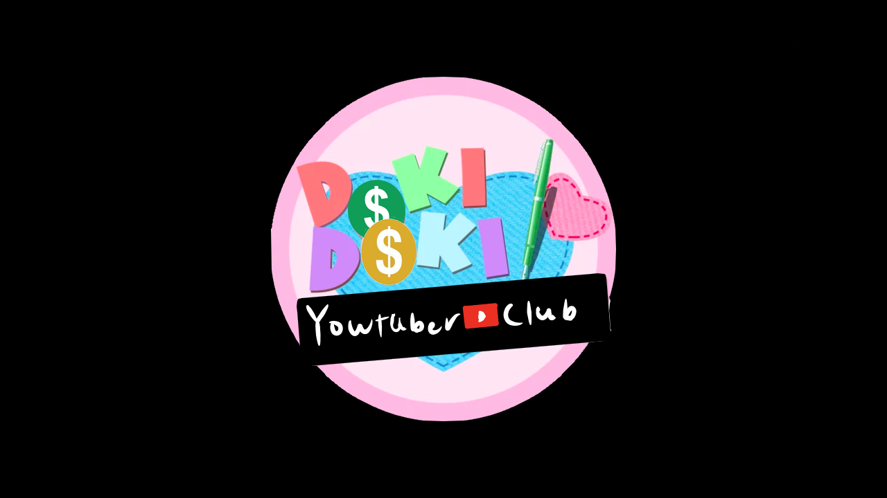

Youtuber Club
Este é um mod cômico curto sobre as Dokis (e MC) se tornarem youtubers porque a Monika quer tentar algo novo. Pois literatura ja deu, e ser Youtuber ta na moda.
⬇ Download
Este é um mod cômico curto sobre as Dokis (e MC) se tornarem youtubers porque a Monika quer tentar algo novo. Pois literatura ja deu, e ser Youtuber ta na moda.
⬇ Download